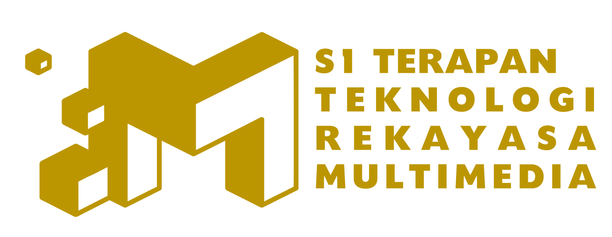
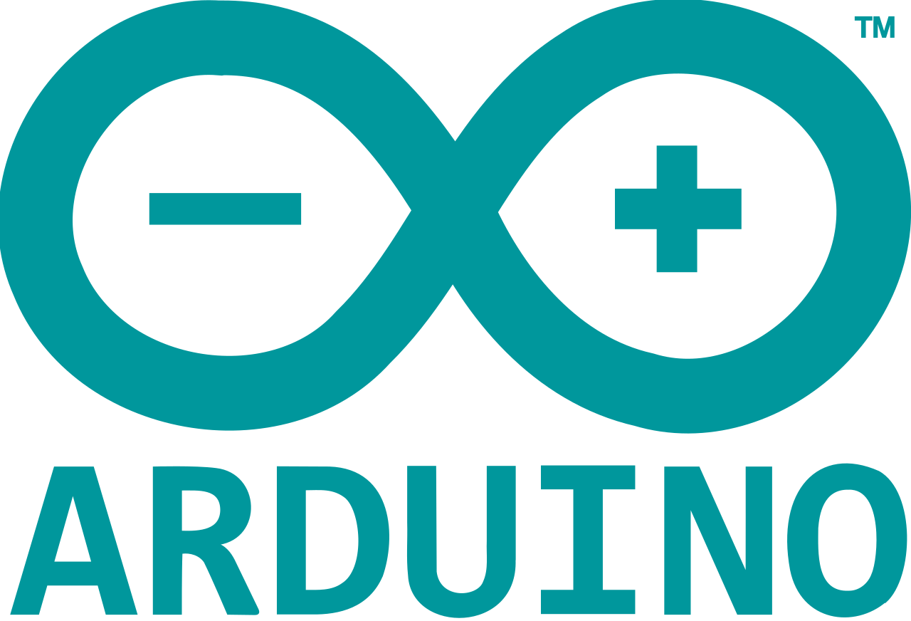
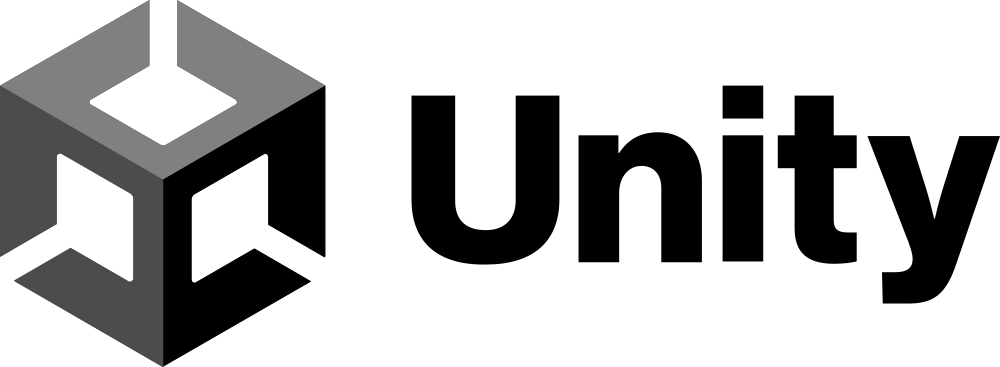
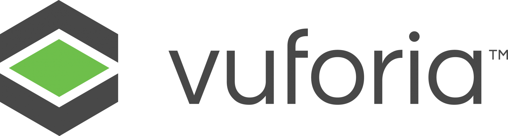
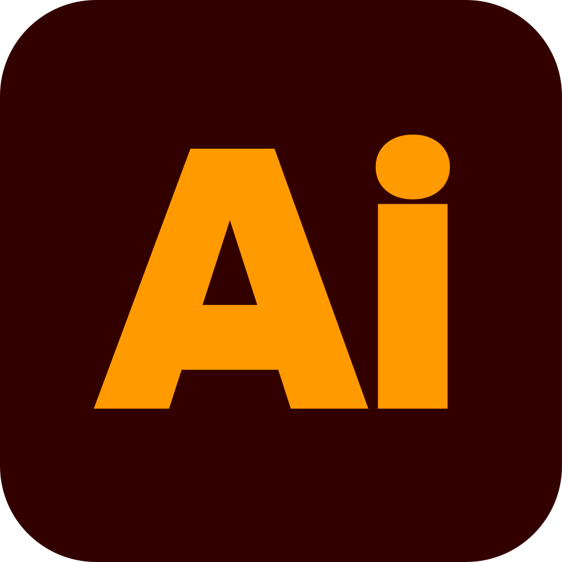
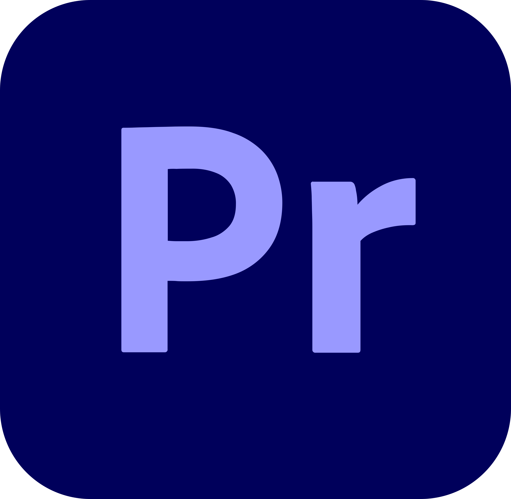
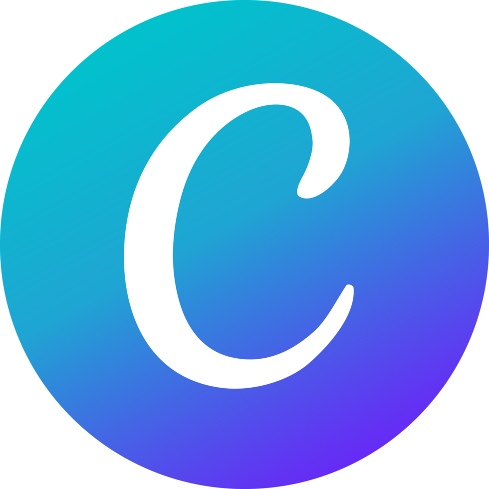
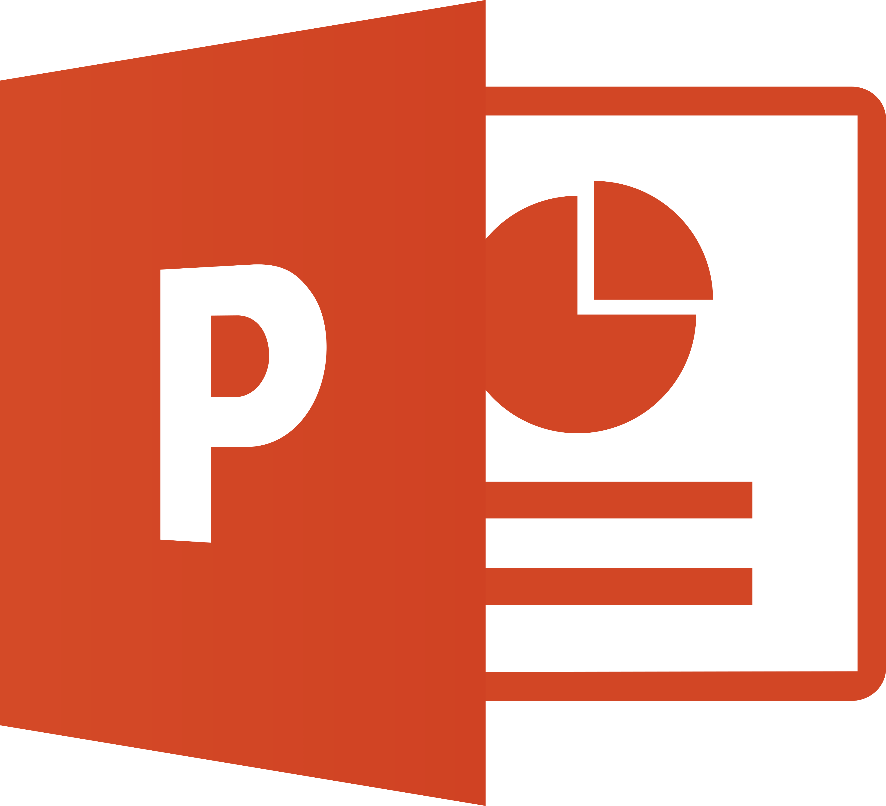
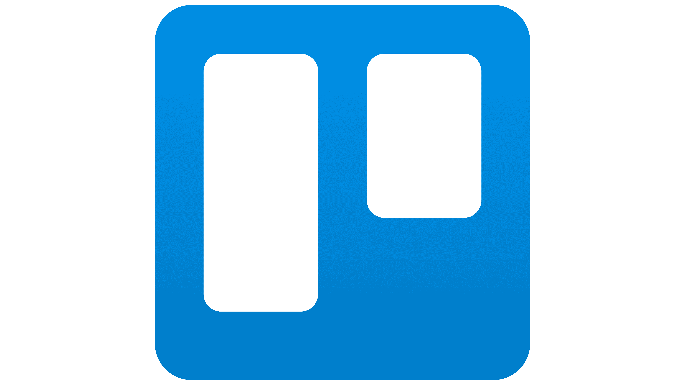

Welcoming Party Mahasiswa BaruPengenalan Kehidupan Kampus Mahasiswa Baru (PKKMB) 2026
Dari kehangatan keluarga,
menuju pertarungan di dunia nyata.
Bersiap Ambil Peran di Masyarakat
Selama SD hingga SMA, kita adalah tanggung jawab orang tua kita. Setelah lulus kuliah, kita adalah tanggung jawab kita sendiri. Siapa kita di masyarakat?
Profil Lulusan (PL)
Setiap lulusan TRM, diharapkan memiliki profil berikut. Dengan profil ini, mereka diharapkan menempati posisi sebagai profesional di masyarakat dengan karakteristik kolaboratif, berintegritas, adaptif, dan progresif.
- Pengembang aplikasi multimedia interaktif
- Konten kreator yang kreatif
- Technopreneur yang inovatif
Capaian Pembelajaran Lulusan (CPL)
Profil Lulusan (PL) hanya bisa dicapai jika mahasiswa memenuhi sepuluh CPL berikut.
Capaian Pembelajaran Mata Kuliah (CPMK)
Ketercapaian Capaian Pembelajaran Lulusan (CPL) dilihat dari nilai CPMK untuk setiap Mata Kuliah. Ketercapaian CPMK dinilai menggunakan asesmen atau rekognisi.








Siap Memasuki Dunia Nyata
Jika dirangkum, inilah bekal yang harus dimiliki saat lulus nanti.
- ✓Bangun pagi, bereskan tempat tidur
- ✓Jangan telat masuk kelas. Duduk di depan
- ✓Kerjakan tugas
- ✓Buang sampah pada tempatnya serta sapu dan pel lantai
- ✓Mandi, keramas, dan sikat gigi
- ✓Baca berita, jangan hanya gosip: Melek sosial politik
- ✓Beri pendapat, dengarkan saran
- ✓Menulis. Baca buku
- ✓Jangan telat makan
Jejak Alumni TRM di Industri
Tempat kerja dan posisi yang digeluti lulusan TRM di berbagai industri kreatif dan teknologi. Dilacak lewat akun LinkedIn.
- 01Graphic Designer / Illustrator
- 02Video Editor
- 03Back / Front / Full Stack Developer
- 04Data Scientist / Analyst
- 05Game / AR / VR Developer, Designer & Artist
- 06UI/UX Designer
- 07Content Creator
- 083D Modeler / Designer / Animator
- 09Social Media Specialist
Tracer Study: Jejak Karier Lulusan
Data lulusan TRM dari tracer study tahunan — gambaran nyata seberapa cepat dan seberapa siap alumni terserap dunia kerja.
Kuliah adalah Investasi
Aset paling berharga dari setiap orang adalah waktu dan tenaga. Target akhir perjuangan ini adalah agar kita tidak perlu menukar lagi keduanya untuk bertahan hidup.
Kuliah
Bekerja
Tuai
Terima Kasih!
Selamat belajar, tumbuh, dan berkembang.